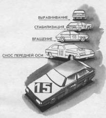

Вращение вокруг задней оси на 180° (“полицейский разворот” задним ходом)
Критические ситуации, связанные с неожиданным вращением автомобиля, вызывают даже у опытных водителей отрицательные эмоции из-за неуверенности в своих силах и непредсказуемости конечного результата. Рефлекторное торможение в фазе вращения может усилить опасность возникновения ДТП из-за того, что автомобиль с заторможенными колесами легко переходит в боковое скольжение, уходя либо на обочину, либо на полосу встречного движения.
Возникновению вращения предшествует обычно грубая ошибка в управлении (резкое торможение с длительным блокированием колес, опоздание с реакцией на глубокий занос, замедленное руление, резкое дросселирование и др.). Поводом для потери устойчивости может послужить быстрый маневр или серия маневров, приводящих к ритмическому или критическому заносу.
Одна из острых критических ситуаций – вращение автомобиля на 180°. Разворот спиной к направлению движения вызывает у водителя психологический стресс. В результате он либо полностью отказывается от управления, либо реагирует резким торможением. В ряде ситуаций первая реакция оказывается более безопасной, так как происходит самостабилизация автомобиля вследствие конструктивных особенностей передней подвески (углы схода, развала и кастора передних колес).
Активные действия по стабилизации следует применить тотчас после преодоления фазы критического заноса, когда полностью теряется возможность выровнять автомобиль для прямолинейного движения (угол заноса около 120° – 180°). Нужно не просто прекратить борьбу с вращением автомобиля, а использовать инерцию вращения, чтобы автомобиль повернулся еще на 180° и вернулся к прямолинейному движению после полного разворота на 360°.
Особенность приема “полицейский разворот” заключается во вращении вокруг задней оси.

Если автомобиль развернуло на 180° и начинается неуправляемое скольжение, вы можете выполнить “доворот” до 360° и вернуться к прямолинейному движению.
Выключите сцепление и предельно проверните рулевое колесо навстречу вращению. Если до момента разворота вы успели повернуть его в сторону заноса, то можете ограничиться только выключением сцепления.
Включите сцепление и выровняйте колеса до полного разворота на 360°.
При этом после непроизвольного вращения вокруг передней оси на 180° нужно произвольно выполнить вращение еще на 180°, но вокруг задней оси (!) в ту же сторону.
Последовательность действий по стабилизации автомобиля (например, вращением против часовой стрелки) зависит от двух условий.
1. Водитель, пытаясь стабилизировать автомобиль в критическом заносе, повернул рулевое колесо вправо до упора. При этом он должен:
– выключить сцепление, чтобы после вращения на 180° перейти к движению задним ходом по инерции;
– включить сцепление, выровнять рулевое колесо, увеличить мощность двигателя перед завершением полного оборота (в фазе вращения 300–360°).
2. Водитель не сумел среагировать на вращение, и передние колеса остались в прямом относительно автомобиля положении. При этом условии водитель должен:
– резко, с максимальной скоростью (!) повернуть рулевое колесо в сторону заноса, чтобы избежать неуправляемого бокового скольжения;
– выключить сцепление;
– включить сцепление и выровнять рулевое колесо для прямолинейного движения.
Для того чтобы автомобиль сохранил прямолинейную траекторию во время вращения, необходимы предельно высокая скорость руления и опережающие действия по выравниванию в заключительной фазе, чтобы воспрепятствовать автомобилю совершить второй оборот вокруг вертикальной оси.